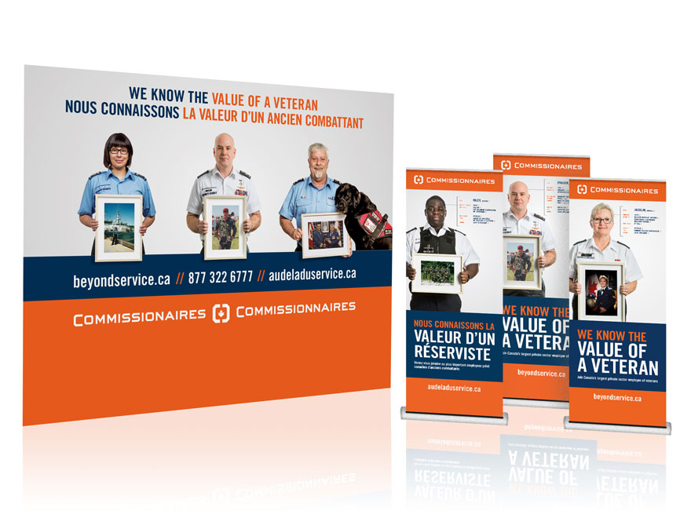

<!--Work Preview section-->
<section class="offset section">
			
	<!--Inner content-->
	<div class="innerContent">

		<!--Container-->
		<div class="container clearfix">
			<div class="fifteen columns">
				<div class="work-preview-close"></div>
			</div>
		</div>
		<!--Container-->
		
		<!--Container-->
		<div class="container clearfix">

			<div class="fifteen columns">

				<!--slider-->
				<div class="work-preview-slider clearfix flexslider" >

					<div>

						<ul class="slides">
							
							<li>
								
							</li>
							
							<li>
								
							</li>

							<li>
								
							</li>

							<li>
								
							</li>

						</ul>

					</div>
					
				</div>
				<!--slider-->

			</div>


			<div class="fifteen columns work-info">
				<h1 class="title">Commissionaires: We Know the Value of a Veteran National Campaign<br><span>Branding</span></h1>
				<p>As part of their Beyond Service messaging, Commissionaires wanted to promote the importance veterans have to their communities and their country by advertising that they are the largest private sector employer of veterans.</p>

				</p>The headline "We Know the Value of a Veteran" is powerful and direct. It's purpose is to inform individuals both retired and currently serving in the Canadian military that the skills they have acquired have significance within the organization.</p>

				<p>The campaign highlights Commissionaires proudly holding a frame of a snapshot from their military past (or present). Military statistics outlining each Commissionaire's retired rank and list of deployments are used to strengthen the personal and heartfelt approach to the campaign. Additional to the stats, the Commissionaire's current division, job title, and start year with the organization are used to showcase the opportunities Commissionaires has to offer.</p>

				<!--<div class="social-icons">
					<ul>
						<li><i class="step fi-heart"></i><span>100</span></li>
						<li><i class="step fi-social-facebook"></i><span>620</span></li>
						<li><i class="step fi-social-twitter"></i><span>450</span></li>
						<li><i class="step fi-social-pinterest"></i><span>100</span></li>
					</ul>
				</div>-->

			</div>


		</div>
		<!--Container-->
	
	</div>
	<!--Inner content-->

	
</section>